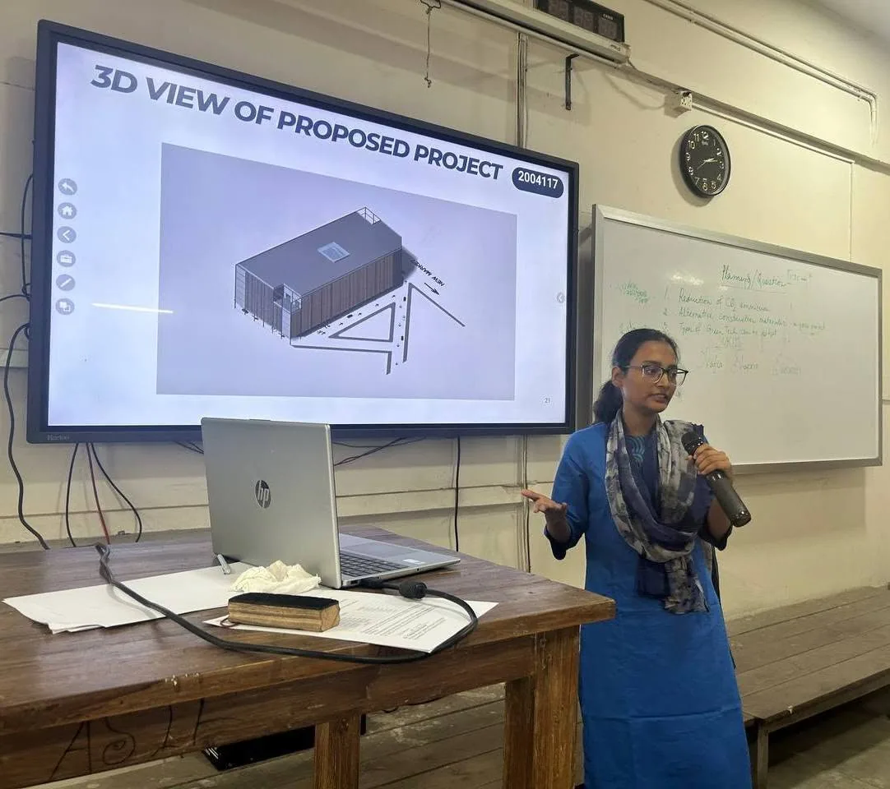
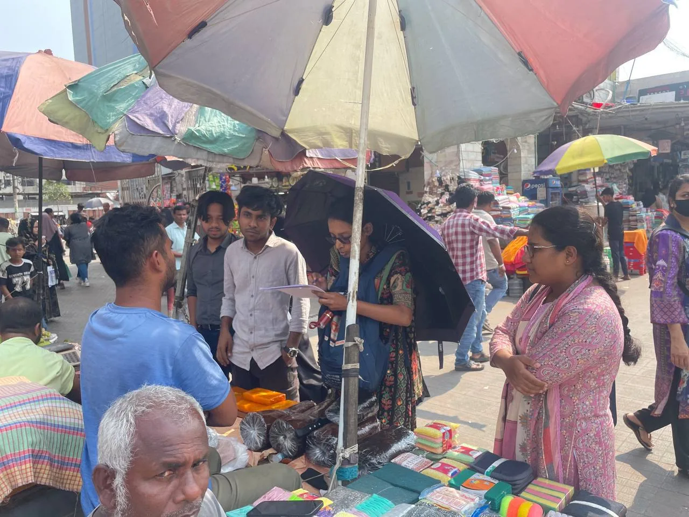

Capstone Project · Team Leader · BUET
Redevelopment of Dhaka's Nilkhet Book Market
- Project Overview
- Led a multidisciplinary capstone project to redevelop Dhaka's iconic Nilkhet Book Market into a sustainable seven-storey mixed-use commercial complex. The project integrated urban planning, structural, geotechnical, transportation, environmental, and socio-economic analyses while preserving the area's cultural identity.
- Role
- Served as Team Leader, coordinating project planning, technical analyses, stakeholder discussions, and design integration across multiple civil engineering disciplines throughout the project lifecycle.
- Technical Scope
- Conducted feasibility, financial, and economic analyses, structural design using an IMRF system with mat foundation, traffic impact assessment, environmental sustainability evaluation, BOQ preparation, and SWOT analysis to assess long-term viability.
- Outcome
- Successfully defended the project with a comprehensive redevelopment proposal featuring organized commercial spaces, underground parking, improved pedestrian circulation, enhanced fire safety systems, a central atrium, and resilient infrastructure designed to improve accessibility while supporting Nilkhet's role as Bangladesh's leading academic marketplace.